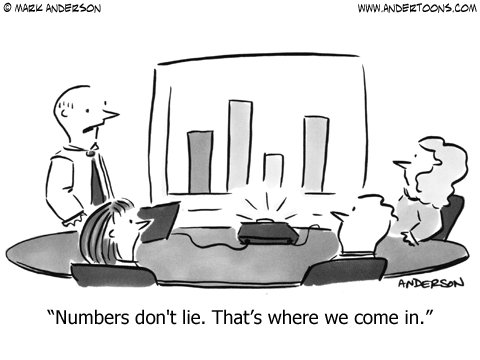

Sample syllabus
Course info
| Day | Time | Location | |
|---|---|---|---|
| Lectures | MWF | 9:00 am - 9:50 am | Room ??? |
Prerequisite: High School Algebra
Instructional Team
| Title | Office Hours | ||
|---|---|---|---|
| Prof. Name | Professor | By Appointment | |
| Name | TA | Tue/Thur 4-5pm |
Learning objectives
By the end of the quarter, you will be able to…
- Use statistical software to manage and process data.
- Use statistical software to perform exploratory data analyses. That is, explore data numerically and visually to gain understanding through data and generate hypotheses and inferences to later test.
- Recognize the importance of data collection, identify limitations in data collection methods, and determine how they affect the scope of inference.
- Build a conceptual understanding of the unified nature of statistical inference.
- Apply estimation and testing methods to analyze single variables or the relationship between two variables in order to understand natural phenomena and make data-based decisions.
- Model numerical response variables using a single or multiple explanatory variables.
- Interpret results in context without relying on statistical jargon.
- Critique and evaluate data-based claims and decisions.
Course Structure
This class will follow an active learning design. Meaning the majority of each lecture will be dedicated to working on activities. A lot of what you do in this course will involve writing code, and coding is a skill that is best learned by doing. A typical class will devote 10-15 minutes to discussion/lecture with the remainder of the class devoted to working on activities where students will either work by themselves or in groups. Throughout the class we will discuss and review the work on the activities. In many cases we may come together to work on parts of an activity as a class.
Textbooks
We will be using Introduction to Statistics and Data Science which is a free online book that we have been developing for this course.
Software
We will be using/introducing the free statistical software RStudio Cloud.
Hardware
Students will need a laptop or Chromebook to be able to follow lectures and to work with RStudio Cloud to complete activities. If access to a laptop is an issue, then please contact the course instructor and we will work to find an accommodation.
Assessment
Assessment for the course is comprised of five components: participation, reading checks, activities, 3 exams, and final project.
Participation
Reading Checks
The lowest three grades will be dropped at the end of the semester.
Activities
The lowest homework grade will be dropped at the end of the semester.
Exams
The midterm exam will focus on conceptual knowledge of course material and be taken in-class through the IMathAS software. Students will be allowed one 8.5 x 11 inch cheat sheet (front & back) on the in-class exams.
Final Project
The projects will focus on practical application of course material. More information about the project will be provided during the quarter.
Exam Improvement Policy
We have worked to develop a policy geared towards a growth mindset. That is, we want a policy where students clearly demonstrate that they have used the midterm as a diagnostic tool to learn from and improve their understanding of statistics. Since the final is cumulative we have settled on a policy where we will replace your in-class midterm score with your in-class final score — only in cases where it is an improvement
Grading
The final course grade will be calculated as follows:
| Category | Percentage |
|---|---|
| Participation | 5% |
| Reading Check | 15% |
| Activities | 10% |
| Exam 1 | 20% |
| Exam 2 | 20% |
| Exam 3 | 20% |
| Project | 10% |
The final letter grade will be determined based on the following thresholds:
| Letter Grade | Final Grade |
|---|---|
| A | >= 93 |
| A- | 90 - 92.9 |
| B+ | 87 - 89.9 |
| B | 83 - 86.9 |
| B- | 80 - 82.9 |
| C+ | 77 - 79.9 |
| C | 73 - 76.9 |
| C- | 70 - 72.9 |
| D | 60 - 69.9 |
| F | < 59.9 |
Tips for success
- Dedicate yourself to being an active and engaged learner.
- Prepare for class by reading and working through code before class.
- Work in groups to learn and complete activities.
- Ask questions! Ask them during class, office hours, or on Campuswire.
- Contribute to a welcoming and inclusive learning environment.
- Don’t be afraid to make mistakes, you learn from mistakes.
Asking Questions & Course Communication
This term we will be using Campuswire (“Enrollment Code: XXXX”) as our preferred platform for questions about activities, reading checks, and general course questions. The system is highly catered to getting you help quickly and efficiently from classmates and the instructional team. Rather than emailing questions to the instructional team, you should post your questions on Campuswire.
The instructional team will check Campuswire periodically and answer questions, but we strongly encourage students to answer each other’s questions. To this end, student will be able to earn bonus points — see Canvas for details.
Please do not expect answers during weekends and evenings.
School Policies
Add your standard school policies here.